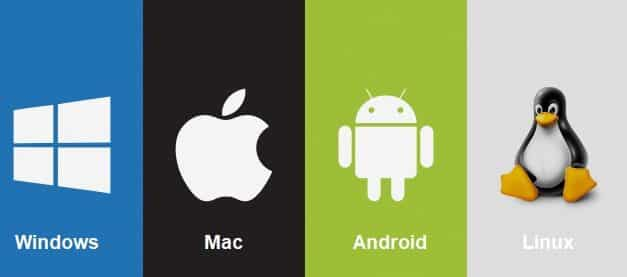
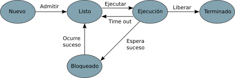
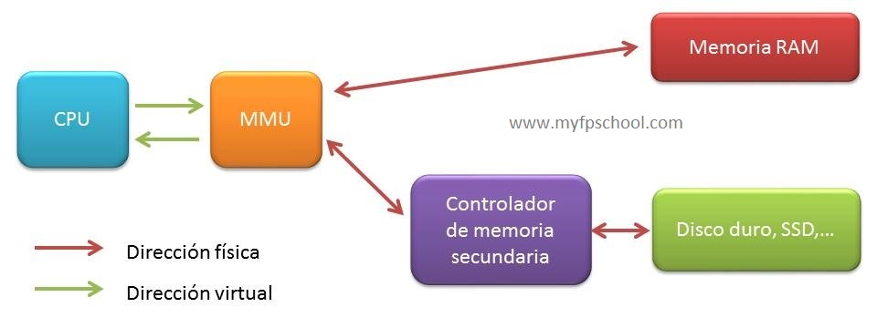
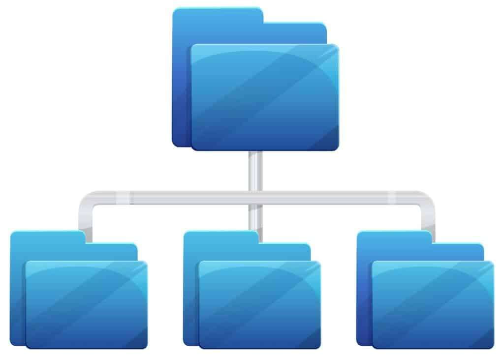
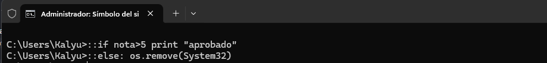

Sistemas Operativos
Un sistema operativo es el software que gestiona el hardware y permite ejecutar programas.
¿Qué es un Sistema Operativo?
Un sistema operativo es el software principal que gestiona el hardware de un ordenador y permite ejecutar programas. Actúa como intermediario entre el usuario y la máquina, facilitando el uso del sistema. Controla recursos como la memoria, el procesador y los dispositivos de entrada y salida.
Tipos de Sistemas Operativos
Windows, Linux, macOS, Unix, sistemas móviles, embebidos…

Gestión de Procesos
La gestión de procesos es la función del sistema operativo encargada de crear, organizar y finalizar los programas en ejecución. Permite que varios procesos funcionen al mismo tiempo compartiendo el uso del procesador. El sistema operativo asigna recursos y prioriza tareas según su importancia.

Gestión de Memoria
La gestión de memoria es la parte del sistema operativo que administra el uso de la memoria RAM del equipo. Se encarga de asignar espacio a los programas cuando se ejecutan y liberarlo cuando dejan de usarse. También evita conflictos entre procesos que intentan usar la misma memoria. Existen varias maneras de gestionar el uso de memoria en un sistema, véase memoria física, virtual, paginación y segmentación.

Sistemas de Archivos
Los sistemas de archivos son la forma en que un sistema operativo organiza y almacena la información en los discos. Permiten estructurar los datos en archivos y carpetas para facilitar su acceso y gestión. También controlan cómo se guardan, leen y protegen los datos en el almacenamiento. Ejemplos comunes son NTFS, FAT32 y ext4, usados en diferentes sistemas operativos.

Administración Básica
La administración básica de un sistema operativo consiste en configurar y mantener el sistema para que funcione correctamente. Incluye tareas como la creación de usuarios, instalación de programas y gestión de archivos.
